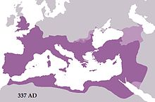

Early Christian and Roman period
According to the Acts of Apostles,[105] Antioch (now Antakya), a city in southern Turkey, is where the followers of Jesus were first called "Christians". The city quickly became an important center of Christianity.[106][107] The Apostle Paul of Tarsus traveled to Ephesus and stayed there, probably working as a tentmaker.[108] He is claimed to have performed miracles and organized missionary activity in other regions.[109] Paul left Ephesus after an attack from a local silversmith resulted in a pro-Artemis riot.[109]
According to extrabiblical traditions, the Assumption of Mary took place in Ephesus, where Apostle John was also present. Irenaeus writes of "the church of Ephesus, founded by Paul, with John continuing with them until the times of Trajan."[110] While in Ephesus, Apostle John wrote the three epistles attributed to him. The Basilica of St. John near Ephesus, built by Justinian the Great in the 6th century, marks the burial site of Apostle John, while the nearby House of the Virgin Mary is accepted by the Catholic church as the place where Mary, mother of Jesus, lived the final days of her life before her Assumption. Saint Nicholas, born in Patara, lived in nearby Myra (modern Demre) in Lycia.
In 123, Roman emperor Hadrian traveled to Anatolia. Numerous monuments were erected for his arrival, and he met his lover Antinous from Bithynia.[111] Hadrian focused on the Greek revival and built several temples and improved the cities. Cyzicus, Pergamon, Smyrna, Ephesus and Sardes were promoted as regional centres for the Imperial cult during this period.[112]